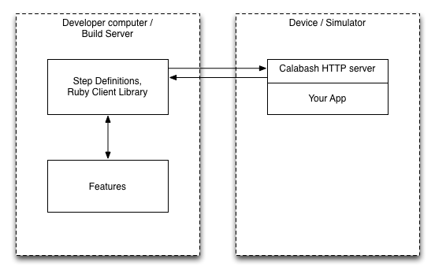

TiCucumber & Calabash
What is BDD?
outside-in BDD (what & why)
http://www.sarahmei.com/blog/2010/05/29/outside-in-bdd/Also, Jenkins integration.
https://github.com/masterthought/jenkins-cucumber-jvm-reports-plugin
I am trying to javascript all the things... even if ruby is a great langWhat is:
the architecture
http://blog.lesspainful.com/2012/03/07/Calabash-iOS/ What is TiCucumber?
https://vimeo.com/75164235The Plan.
aka wrap calabash and use opalrb to handle ruby dependencies
What I discussed in Atlanta
https://www.eventbrite.com/e/ticucumber-workshop-tickets-7789670113
that time I started writing ti cucumber and then saw chris barbers' talk ...
Houston, we have a problem.

which blew my %^&* mind. I need to scrap ticucumber and restart. Also the opalrb idea didn't work out.
credit: http://www.phrases.org.uk/images/houston-we-have-a-problem.jpgSolution:
keep the server bits, map the REST API and go node go